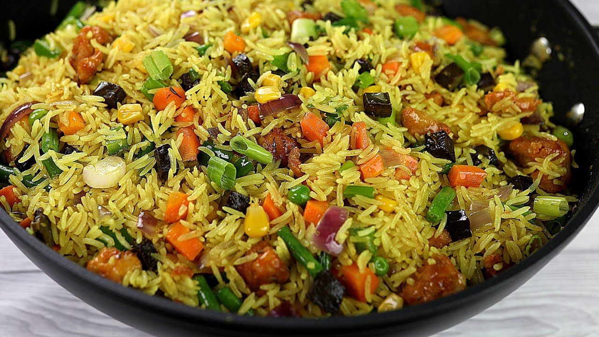

FRIED RICE RECIPE

Description
The Nigerian fried rice is a staple lunch, dinner, and even party dish in Nigeria.
Very simple yet delicious recipe. This version uses mixed vegetables and Beef liver; you can use Shrimp or any protein you'd like.
You can omit the beef liver if you love to make vegan fried rice.
Ingredients
- 2 cups cooked rice
- 1/2 cup chicken stock
- 3 tbsp oil for frying
- 1 cup onion diced
- 1 cup mixed Vegetables Carrots; Sweet Peas, Sweet Corn and green beans
- 1/2 tsp thyme
- 1 tsp Curry powder
- 2 scallions diced
- 1 chicken stock cube
- 1 cup beef liver cubed
- salt to taste
- 1/4 tsp Cayenne pepper
Steps
- Add the boiled rice to the stock in a medium pot and cook on medium heat until the water is dried up.
- Preheat the oil in a pan on medium to high heat, throw in the onions, and fry for a minute or two; add the scallions, mixed vegetables, thyme, curry powder, salt, and stock Cube.
- Throw in the beef liver and rice — Stir-fry for about 3 to 5 minutes on high heat.
- Take it off the heat and serve.
Go to the next recipe here.
Previous recipe here.